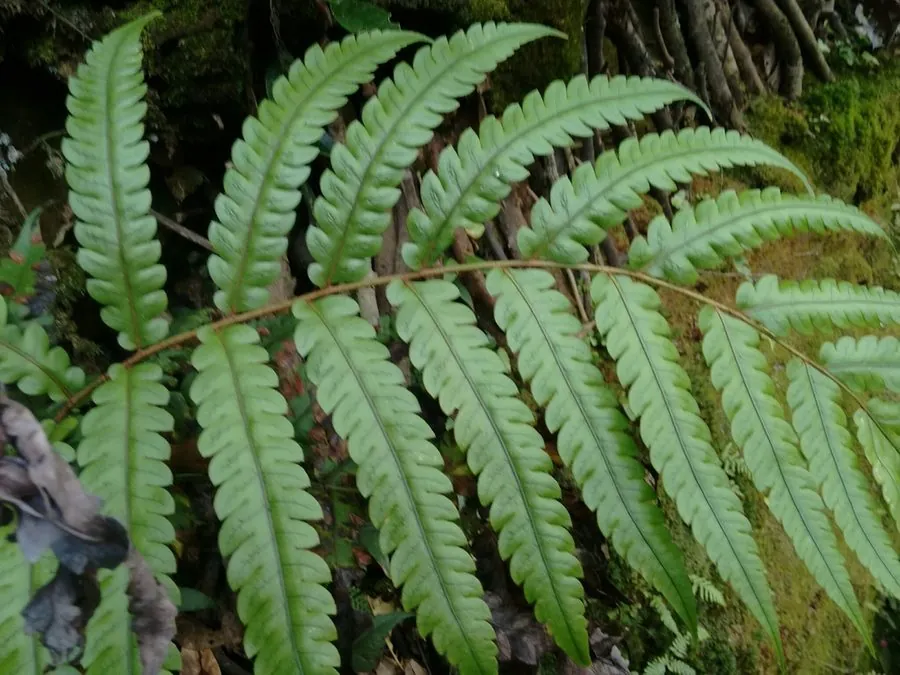

蕨类与裸子植物 · 植物界
狗脊 Woodwardia japonica

狗脊的叶片二回羽状、羽片如鱼骨般排列，根状茎粗壮可入药，是南方林下常见的药用与观赏蕨类植物。
- 分类
- 门蕨类植物门纲水龙骨纲目水龙骨目科乌毛蕨科属狗脊属
- 栖息环境
- 南方山地林下、溪边与沟谷阴湿处，喜温暖湿润半阴
- 地理分布
- 中国长江以南各地，日本、朝鲜半岛也有分布
- 保护级别
- 暂无评估；野生资源因药用采挖有所减少
物种志
狗脊是乌毛蕨科多年生蕨类，株高 0.6–1.5 m。根状茎粗壮、横走，密生红棕色披针形鳞片。叶簇生，叶柄粗壮；叶片二回羽状深裂，羽片披针形，排列整齐如鱼骨，革质，深绿色，叶脉网状。孢子囊群线形，沿中脉两侧排列，成熟时褐色。狗脊的根状茎粗大，是中药“狗脊”的来源之一。
狗脊喜温暖湿润、半阴环境，多生于南方山地林下、溪边与沟谷阴湿处，不耐寒。它以孢子繁殖，也可用根状茎分株。狗脊的根状茎粗壮如狗脊骨，中药称“狗脊”，有补肝肾、强腰膝、祛风湿之效，因此长期被采挖，野生资源有所减少。它叶形整齐、植株挺拔，也可作林下观赏。需注意：中药中作“狗脊”的还有金毛狗等其他蕨类，使用时应辨明来源。
形态与习性
- 株高0.6–1.5 m
- 叶二回羽状深裂，羽片如鱼骨
- 孢子囊群线形，沿中脉两侧排列
- 药用根状茎入药称“狗脊”
- 生境南方林下阴湿处
趣味知识
- 狗脊的羽片整齐排列，看起来像一根根鱼骨。
- 它的根状茎粗壮，中药“狗脊”就是它的根状茎。
- 中药里叫“狗脊”的不止一种蕨类，使用时要辨明来源。